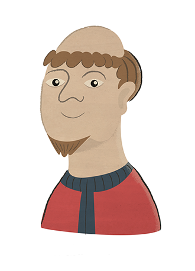
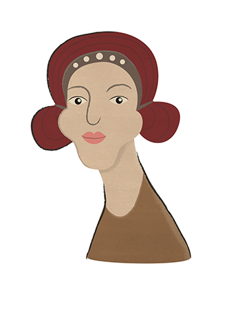
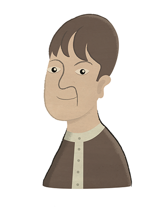
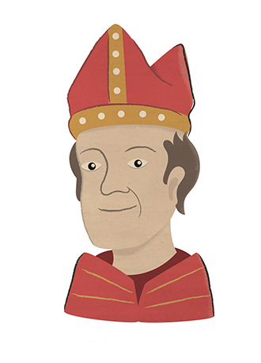

Who's Who
Key characters
Supporting characters
-

Henry of Scurlage
Armed man who watched Cragh's hanging
-

John Young
Franciscan friar, translator for William Cragh
-

Jovanta
Handmaiden of Mary de Briouze, who measured William Cragh
-

Matilda de la Chapel
Handmaiden of Mary de Briouze, fed William Cragh after his resuscitation
-

Maurice of Pencoyd
Franciscan friar, translator for William Cragh
-
Sunehild
Handmaiden sent by Mary to measure William Cragh
-

Thomas Mathews
Burgess of Swansea, owner of house in which William Cragh recovered
-

Trahaearn ap Hywel
Welsh nobleman and malefactor, hanged alongside William Cragh
-

William of Durand
Bishop of Mende from 1296-1328
-
William of Testa
Archdeacon of Aran